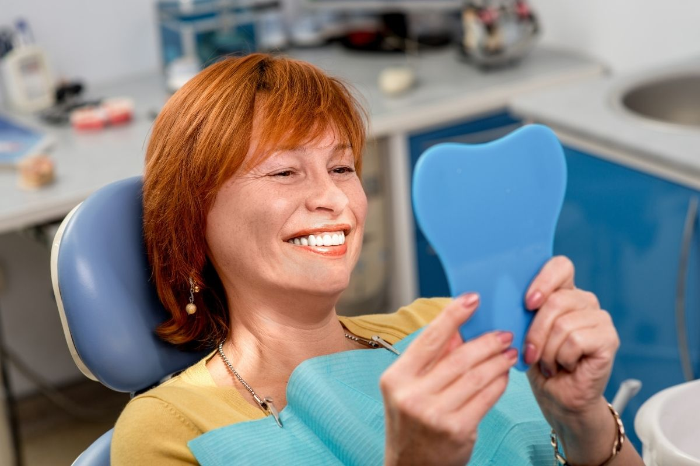
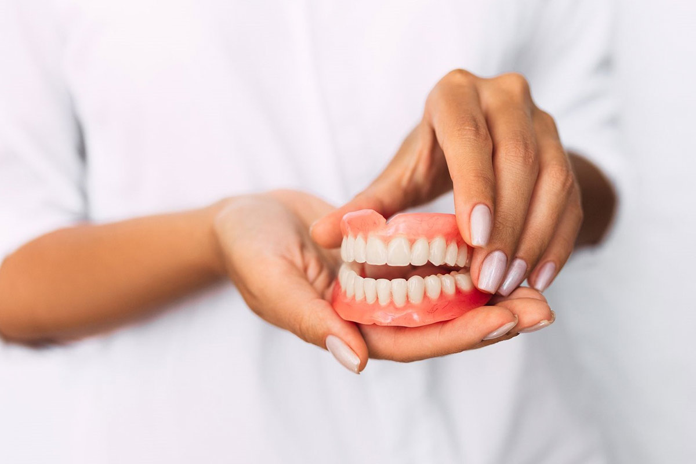
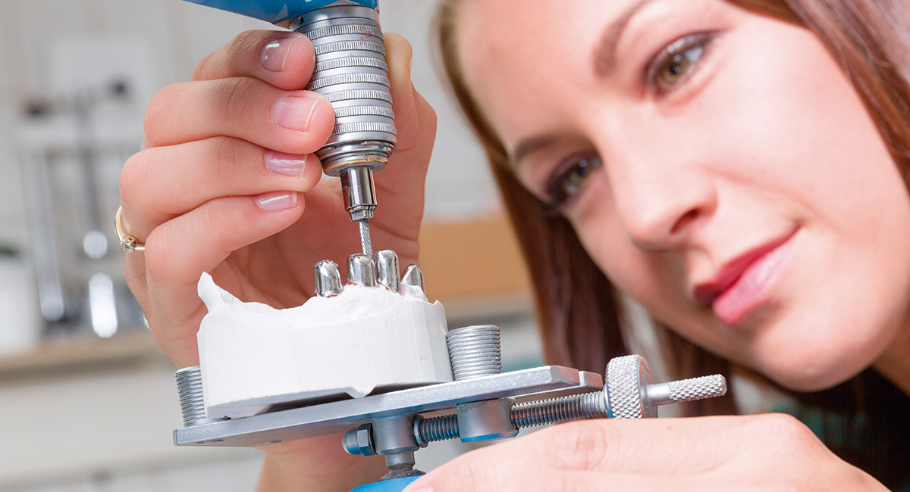

Desde pequeña, siempre me ha fascinado el detalle, la precisión y la capacidad que tiene la técnica para transformar vidas. Mi pasión por la mecánica dental no es solo una profesión, sino una vocación que se nutre de años de estudio, práctica y un profundo compromiso con el bienestar de las personas. Esta es mi historia, tanto personal como profesional, y la razón por la que cada día me esfuerzo por ser un mejor profesional y ser humano

Un llamado a la excelencia
Invito a quienes visitan mi página a conocer más sobre mi trayectoria y a confiar en un trabajo que se basa en la pasión, la ética y la búsqueda constante de la excelencia. Mi objetivo es que cada intervención no sea solo una solución técnica, sino una oportunidad para transformar vidas y realzar la confianza de cada paciente.

Formación y especialización
Mi formación en mecánica dental comenzó con estudios especializados que me permitieron comprender en profundidad la anatomía y las necesidades estéticas de la odontología. Durante este proceso, tuve la oportunidad de trabajar en laboratorios, donde adquirí experiencia práctica en la elaboración de prótesis, coronas y otros dispositivos esenciales para la salud bucal.

Mi Trayectoria Personal y Profesional
Desde mis inicios, mi curiosidad por el funcionamiento del cuerpo humano y el deseo de contribuir al bienestar de los demás me impulsaron a adentrarme en el mundo de la salud. Tras una formación inicial en ciencias de la salud, descubrí en la mecánica dental la perfecta conjunción entre técnica, estética y funcionalidad. Con el paso del tiempo, esa chispa se transformó en una pasión que me llevó a especializarme, formándome en instituciones y trabajando junto a expertos que me inspiraron y retaron a dar siempre lo mejor.